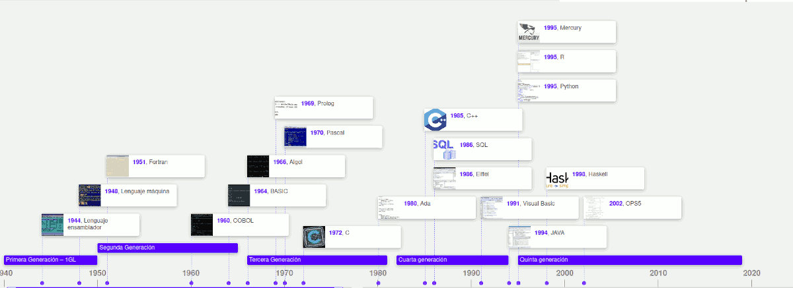
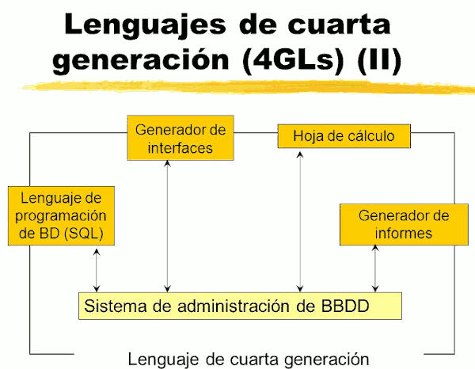

És possible classificar els llenguatges segons el moment en el qual apareixen i les seues característiques en diferents generacions.

Primera Generació
Llenguatge màquina: específic per a cada processador. Ús de codi binari.
Segona Generació
Llenguatge assemblador: substitueix els codis binaris del codi màquina per codi mnemònics. Continua sent específic per a cada família de processadors.
Tercera Generació
Llenguatges d'Alt Nivell: llenguatges estructurats amb sentències pròximes al llenguatge parlat.
Quarta Generació
Llenguatges de propòsit especial: usats en aplicacions de gestió i ús de bases de dades. Són entorns de desenvolupament d'aplicacions constituïts per un conjunt d'eines integrades entre les quals es troben editors, compiladors, sistemes per a l'accés a bases de dades, generadors d'informes, generadors de pantalles (mode caràcter, interfícies gràfiques), etc. La quarta generació de llenguatges de programació avança en la sintaxi utilitzada, presentant una sintaxi diferent per a la representació del control i les estructures de dades amb un major nivell d'abstracció.

Llenguatges de programació Visual
La programació visual brinda els coneixements necessaris per a dissenyar i desenvolupar aplicacions amb un entorn visual amigable i fàcil d'utilitzar per a l'usuari.
Els llenguatges de programació visual tendeixen a facilitar la tasca dels programadors, atés que amb els primers llenguatges de programació crear una finestra suposava molta faena. Amb aquests llenguatges per al disseny de la interfície gràfica de l'aplicació no es requereix de la programació sinó que mitjançant la selecció dels controls necessaris (finestres, botons, caixes de text, etc.) es dibuixarà la interfície gràfica requerida.
Alguns exemples de llenguatges visuals són: Visual Basic, Gambas, Delphi, Developer de Oracle, Borland C.
Llenguatges d'ús especific (DSL)
Els llenguatges de programació d'ús especific o llenguatges específics de domini (DSL) han sigut creats i s'utilitzen per al desenvolupament d'aplicacions amb característiques molt especifiques. Fora d'aquestes característiques l'ús d'aquests llenguatges no presenta cap utilitat.
En el desenvolupament de programari, un llenguatges específic de domini (domain-specific language - DSL) és un llenguatge de programació dedicat a un problema de domini en particular, o una tècnica de representació o resolució de problemes específica. Aquest concepte no és nou, ja que des de sempre van existir llenguatges de programació de propòsit específic.
L'oposat a un llenguatge específic de domini són els llenguatges de programació de propòsit general, com a C, Java, Basic, etc.
Com a exemples de DSL podem esmentar les fórmules i macros dels fulls de càlcul, les expressions regulars (conjunt de caràcters que constitueixen una expressió de cerca d'informació: grep, awk...) d'unes certes utilitats, Csound (un llenguatge per a crear arxius d'àudio), autolisp en Autocad, VBA (Visual Basic per a aplicacions: Excel, word, etc.), logo per a ensenyar a programar al públic infantil, open GL, VRML (creació de gràfics 3D), SQL (Base de dades), etc.
Crear un DSL (amb el programari que el suporte) pot valdre la pena si el llenguatge permet expressar tipus de problemes i solucions particulars que els llenguatges preexistents no poden modelar tan fàcilment.
Cinquena Generació
Naturals: inclouen la IA i els Sistemes Experts. S'utilitza en xarxes neuronals. Una xarxa neuronal és una forma d'intel·ligència artificial que tracta d'imitar la ment humana.